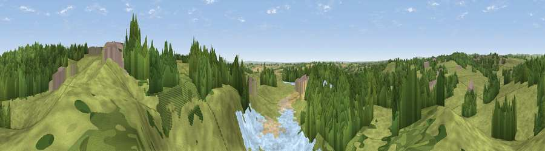

Viewpoint near Mugginton
#24284 in England · top 30% of its area beats it · near MuggintonWhere it is
The exact computed spot (SK 27825 44625). Click the marker for map links.
The view, rendered

A 360° render of this exact spot computed from the terrain model, tree cover and land cover — summer colours, afternoon light, calibrated against photographs of famous viewpoints. Real trees, hedges and buildings will differ in detail.
The panorama
Grey silhouette: terrain skyline in each direction (720 bearings, Earth curvature and refraction included). Dashed green: skyline with trees (+15 m) and buildings (+8 m) as obstacles. Blue strip: how far the ground is visible on each bearing.
Where the view opens
Wedge length = distance to the farthest visible ground on that bearing (vegetation-aware). Rings at 10, 25 and 50 km.
What fills the view
51% grassland · 33% woodland · 12% water · 2% cropland · 1% built-up ·
Angular shares of the visible panorama (visual magnitude), not map area. Landscape diversity 0.50 (0–1 Shannon).
Key numbers
More beautiful places nearby
The staircase of upgrades: each row has a higher view potential than everything closer. Driving times are estimates from straight-line distance, calibrated against real road routing — check an actual route before setting out.
| Place | Direction | Drive | Score |
|---|---|---|---|
| Viewpoint near Turnditch | NNE · 1 km | ~3 min | 57.2 |
| Viewpoint near Windley | ESE · 2 km | ~6 min | 58.6 |
| Viewpoint near Hazelwood | ENE · 6 km | ~13 min | 66.3 |
| Alport Height | NNE · 7 km | ~15 min | 73.9 |
| Tissington Hill | WNW · 15 km | ~27 min | 75.5 |
| Viewpoint near Stanton under Bardon | SSE · 36 km | ~55 min | 76.0 |
| Viewpoint near Woodhouse Eaves | SE · 38 km | ~57 min | 77.7 |
| Viewpoint near Mow Cop | WNW · 44 km | ~64 min | 78.9 |
52.99823, -1.58686 · source: screening · position refined by local search. Computed location — check access rights before visiting.